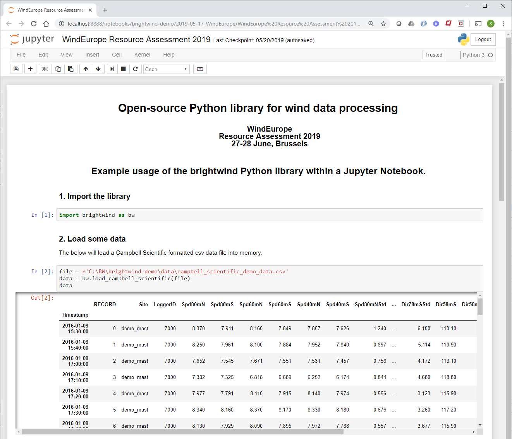
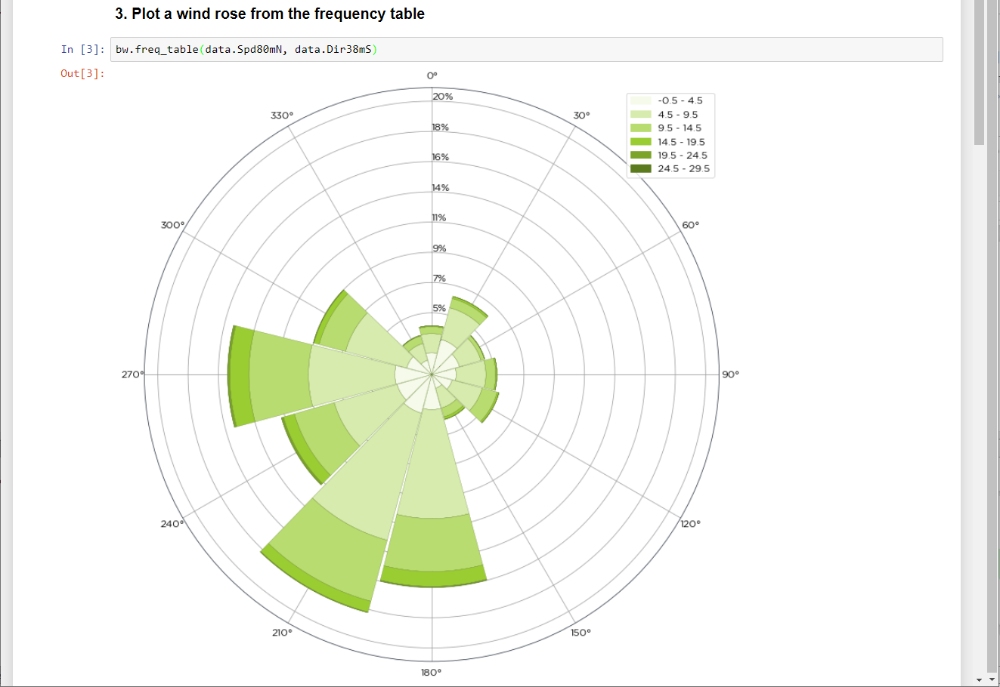

The brightwind python library aims to empower wind resource analysts and establish a common industry standard toolset.
Example usage is shown below via a Jupyter Notebook.
 The library can be installed by using pip install from the command line (for those that have pip installed).
C:\Users\Stephen> pip install brightwind
For those not familiar with Python or pip, please follow this tutorial, getting started on Windows, to get started.
The library provides wind analysts with easy to use tools for working with meteorological data. It supports loading of meteorological data, averaging, filtering, plotting, correlations, shear analysis, long term adjustments, etc. The library can export a resulting long term adjusted tab file to be used in other software.
The key benefits to an open-source library is that it provides complete transparency and traceability. Anyone in the industry can review any part of the code and suggest changes, thus creating a standardised, validated toolkit for the industry.
By default, during an assessment every manipulation or adjustment made to the wind data is contained in a single file. This can easily be reviewed and checked by internal reviewers or, as the underlying code is open-sourced, there is no reason why this file cannot be sent to 3rd parties for review thus increasing the effectiveness of a banks due diligence.
The library is licensed under the GNU Lesser General Public License v3.0. It is the intention to allow commercial products or services to be built on top of this library but any modifications to the library itself should be kept open-sourced. Keeping this open-sourced will ensure that the library becomes the de facto library used by wind analysts, establishing a common, standard industry wide toolset for wind data processing .
A test dataset is included in this repository and is used to test functions in the code. The source of the dataset is:
Dataset |
Source |
Notes |
|---|---|---|
Demo data |
Anonymous |
A modified 2 year met mast dataset in various logger formats along with associated 18-yr MERRA-2 data. |
Offshore-CREYAP-2 |
Two offshore met masts with MERRA data. |
|
CREYAP Pt II |
Onshore 50m met mast from the CREYAP Pt II along with additional MERRA-2 reference data |
If you wish to be involved or find out more please contact stephen@brightwindanalysis.com.
More information can be found on the Community section.
{kind=link}